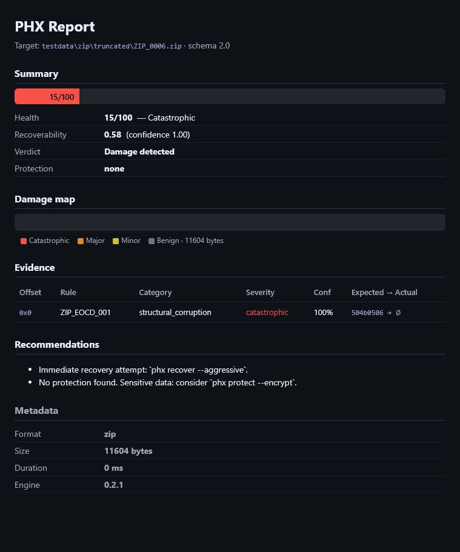

VERAQIS should earn trust the same way it handles files: show the evidence, name the limits, and avoid claims that the current release cannot support.
Test evidence and public availability are separate things. This is what is actually published today.
| Product | Public status |
|---|---|
| VERAQIS Archiver (Android) | Available — release-key signed |
| VERAQIS Recovery (Windows) | Withdrawn — rebuild pending |
| VERAQIS Recovery CLI (Linux) | Withheld — rebuild pending |
| ColdPass by VERAQIS (Windows) | Withdrawn — rebuild pending |
Real result: damaged ZIP, health 15/100 → VERAQIS found ZIP_EOCD_001 → rebuilt the archive → 8412B recovered, 0B lost.
VERAQIS differentiates by proving recovery, not by guessing more bytes. When proof is missing, abstaining is treated as the correct outcome. The result above is from a local development-build CLI run, not a public download.
ZIP_0006.zip is truncated and missing the ZIP end-of-central-directory signature.
Report flags ZIP_EOCD_001, health 15/100, recoverability 0.58.
zip-rebuild reconstructs the central directory from surviving local headers.
8412B recovered, 0B lost, health 15 → 100, manifest written.
These checks ran against the current development and release-candidate builds. They are the gates a public package must pass — not a description of a current public Windows or Linux download. No Windows or Linux Recovery package is published today.
| Area | Check | Result | What it means |
|---|---|---|---|
| Rust engine | cargo test --workspace --all-targets | passed | Workspace test suite completed successfully. |
| Rust quality | cargo fmt --all --check and clippy with warnings denied | passed | Formatting and lint gates were clean for the checked workspace. |
| Desktop UI | npm audit --audit-level=moderate | 0 vulnerabilities | The previous Vite/esbuild advisory is no longer present in the desktop UI audit. |
| Desktop bundle | Tauri NSIS bundle build | created | The Windows installer artifact was produced for beta evaluation. |
| Installed Desktop | veraqis-desktop.exe --self-test-json from a silent NSIS install | 15/15 passed | The packaged app found its worker, exercised inspection/recovery/salvage/protection paths, left no worker alive, and failed the missing-worker negative control. |
| Safe cancellation | Cancel a running folder-protection batch after progress | passed | The operation emitted a correlated cancelled event, committed no manifest and swept every staged sidecar. |
| Linux release gate | Exact-ref workspace tests plus real PDEATHSIG parent-death test | passed locally | Clean WSL Ubuntu clone at edff62e: full workspace tests and the Linux-only parent-death test passed on Rust 1.85.1. |
| Linux CLI | x86_64-unknown-linux-musl release build and WSL smoke test | created | The Linux tarball extracted and reported VERAQIS 0.2.1. |
| macOS CLI | x86_64-apple-darwin local build on Windows | blocked | The Apple SDK is not available on this host; the local-only release process does not fabricate a macOS build. |
| Live CLI demo | veraqis report and veraqis recover on ZIP_0006.zip | passed | Report found ZIP_EOCD_001; recovery rebuilt the ZIP central directory, 8412B recovered, 0B lost. |
| Site deploy | Static deploy dry-run with token substitution | passed | Canonical URLs, sitemap, robots file and downloads are copied into deploy output. |
| Published artifact hash | SHA-256 of the Android Archiver APK on the download page | verified | The published VERAQIS-Archiver-Android-1.7.0-rc1.apk matches its listed SHA-256. Development Windows/Linux artifacts are hashed internally but not published. |
| Windows code signing | Authenticode signature check | not in place | No public Windows artifact is offered; a fresh build requires Authenticode signing review before release. (The Android APK is separately release-key signed.) |
These numbers are copied from the repository benchmark JSON files, not rewritten as marketing claims. Percentages mean exactly what the source metric measures. The important part is the combination: verified output, zero false output, and visible abstention where proof is absent.
pcrb.json
exp_pds_benchmarks.json
sqlite_semantic_benchmarks.json
opc_semantic_benchmarks.json
pdf_semantic_benchmarks.json
xcr_solver.json
nc.json
| Source | Scope | Measured result | False / overclaim gate | What this means |
|---|---|---|---|---|
| pcrb.json | Verified-recovery benchmark, 6 VERAQIS cells | 5577/5577 emitted bytes verified correct; 100% proof-checkable; 144 emitted regions and 96 abstained regions. |
false_recovered_bytes = 0 |
VERAQIS returned only bytes it could prove. The 96 abstentions are a safety feature: those regions were not guessed. |
| exp_pds_benchmarks.json | bzip2 and xz block-independent salvage cells | bzip2 truncation/mid-stream and xz CRC-32/CRC-64 truncation/mid-stream cells each report 100% recovered useful bytes over recoverable bytes. |
false_recovered_bytes = 0 per cell |
When the compressed format has independently checkable blocks, VERAQIS can salvage those blocks exactly and stop at unsafe limits. |
| sqlite_semantic_benchmarks.json | 10 SQLite semantic fixtures | 19/20 verified or WAL rows recovered (95.0%); 5 orphan rows reported separately, not counted as verified table rows. |
false_rows = 0; max_overclaim_rate = 0 |
Rows are treated as business objects. VERAQIS separates verified rows from orphan evidence so the report does not overclaim. |
| opc_semantic_benchmarks.json | 13 DOCX/XLSX/PPTX semantic fixtures | 35 byte-verified part instances; duplicate parts are counted as instances, so this is not presented as a recovery percentage. |
false_verified_parts = 0; negative control recovered zero parts |
Office files are checked as package parts plus relationship graph. Duplicate evidence is shown, not turned into a fake percentage. |
| pdf_semantic_benchmarks.json | 6 PDF semantic fixtures | 15/18 recovered objects verified from the graph (83.3%); orphan/rootless objects are recovered but not marked verified. |
false_verified_objects = 0; negative control recovered zero objects |
PDF objects need graph proof from Root to become verified. Orphan objects stay visible but lower-trust. |
| xcr_solver.json | Exact-copy XCR/TCR research gate | TCR exact 24/24; XCR exact 24/24; cross-tenant, tautology, near-miss and negative controls recover 0/96. |
false_recovered_bytes = 0; PCC accepted 48/48 positive certs |
Exact-copy recovery works only for same-owner exact matches. Cross-tenant and near-miss cases abstain by design. |
| nc.json | Negative-certificate benchmark | 48/48 genuinely lost regions covered (100%); forged loss claims rejected 24/24. |
false_loss_bytes = 0 |
VERAQIS can also prove when data is lost, but only when that loss claim passes its own gate. |
The numbers are damage-class measurements. They are not a universal promise that every customer file will recover at the same percentage.
Direct competitors here are products or services that publicly claim to repair corrupted archives, Office files, or PDFs. Official free/demo downloads were captured where available; only reproducible portable/CLI tools are scored as executed.
competitive-baseline-results.json
direct competitors only
official demo downloads hashed
qpdf 12.3.2
Python 3.12.13
pypdf 6.10.0
bsdtar/libarchive 3.8.4
PowerShell Expand-Archive
Downloads went to target/competitor-lab. GUI installers are fingerprinted
but not scored until a reproducible manual/VM run produces saved output; online tools were not run
because that would upload the corpus to a third party.
| Product | Downloaded artifact | Scripted run | Result on same files |
|---|---|---|---|
| qpdf 12.3.2 | 24,555,583B, sha256 8941870a604e... |
executed | On the damaged PDF, --check and rewrite exited 3 with warnings, wrote an 11,429B PDF; qpdf then checked that output with exit 0, and pypdf opened 10 pages. |
| DiskInternals ZIP Repair | 532,606B, sha256 0ffb1f637498..., unsigned |
downloaded | Free GUI executable captured; no documented headless repair interface found, so ZIP sample output is pending manual/VM run. |
| SysTools ZIP Repair | 826,696B, sha256 9fee4730b92c..., signed, version 3.0 |
downloaded | Official demo is preview-only, so no saved recovered ZIP was produced for scoring. |
| BitRecover ZIP Repair Wizard | 4,037,168B, sha256 3564baeb19f4..., signed, version 5.4 |
downloaded | Official demo shows recovered file names only, so it is not counted as verified recovered bytes. |
| ZIP Recovery Kit / Recovery Toolbox | 3,159,920B, sha256 24c4627385a8..., signed |
downloaded | GUI demo captured; vendor page says unregistered users cannot save recovered data. |
| RecoveryTools Zip Repair | 4,302,784B, sha256 051bb1458a13..., signed, version 6.0 |
downloaded | GUI installer captured; no documented headless repair interface found for a scripted ZIP run. |
| DataNumen Zip Repair | 14,889,992B, sha256 fd1895dd9dbe..., signed, version 4.0 |
downloaded | Installer captured; ZIP repair output pending manual/VM run with independent verification. |
| DataNumen PDF Repair | 15,375,192B, sha256 aba12fcd6382..., signed, version 4.00 |
downloaded | Installer captured; PDF repair output pending manual/VM run with independent verification. |
| DataNumen Archive Repair | 38,923,520B, sha256 41b294c915b4..., signed, version 4.00 |
downloaded | Archive-suite installer captured; ZIP/TAR output pending manual/VM run with independent verification. |
The local machine initially had no WinZip, WinRAR, Microsoft Office desktop apps,
qpdf, Ghostscript, or 7-Zip on PATH. qpdf was downloaded and executed from its
official portable release; GUI demos are listed as downloaded until their output can be verified.
| Direct competitor | Direct overlap | Public claim reviewed | Local lab status | VERAQIS comparison point |
|---|---|---|---|---|
| DiskInternals ZIP Repair | ZIP repair | Claims damaged ZIP scanning, structure restoration, and extraction of intact files into a new archive. | downloaded; GUI pending | Direct ZIP competitor. Reviewed page did not expose a proof-carrying certificate or false-output gate. |
| DataNumen Zip Repair | ZIP / SFX repair | Claims repair of corrupt or damaged ZIP files and recovery of as much data as possible. | downloaded; GUI pending | Direct ZIP competitor. VERAQIS should compare on verified bytes, abstentions, and replayable provenance. |
| DataNumen Archive Repair | ZIP, RAR, TAR, CAB repair | Claims an archive recovery suite covering corrupt ZIP, RAR, Unix TAR, and CAB archives. | downloaded; GUI pending | Direct archive-suite competitor across VERAQIS archive formats; needs corpus run before any win/loss claim. |
WinZip repair / wzzip -yf |
ZIP repair | Documents a command-line repair flow for corrupted ZIP files using WinZip Command Line. | not installed on this host | Direct ZIP baseline candidate for the next lab pass once the exact version is installed. |
| SysTools ZIP Repair | ZIP recovery | Claims scan, preview, and extraction from corrupted ZIP files, including password-protected ZIP preview/recovery. | downloaded; preview-only demo | Direct ZIP competitor; VERAQIS proof axis should distinguish previewable files from verified recovered bytes. |
| BitRecover ZIP Repair Wizard | ZIP repair | Claims corrupt ZIP repair with a free demo that shows recovered file names. | downloaded; preview-only demo | Direct ZIP competitor; filename preview is not scored as verified recovered bytes. |
| RecoveryTools Zip Repair | ZIP repair | Claims repair of corrupted, damaged, broken, CRC-error, large, and batch ZIP archives into a healthy ZIP file. | downloaded; GUI pending | Direct ZIP competitor; demo/full limitations should be captured before any scored comparison. |
| ZIP Recovery Kit / Recovery Toolbox | ZIP repair | Claims damaged ZIP preview in the demo; saving recovered data requires the full version. | downloaded; save locked | Direct ZIP competitor; preview-only demos remain outside the verified-recovery score. |
| Remo Repair ZIP | ZIP / ZIPX repair | Official page was found, but this crawler received a verification gate instead of reviewable product text. | pending source capture + lab run | Direct ZIP/ZIPX competitor; keep in the lab plan, but do not quote claims until the page or binary is captured. |
| OfficeRecovery Online | ZIP, Office, PDF, image and database repair | Claims upload-based repair for corrupted files that native apps cannot open. | upload not run | Direct online competitor; VERAQIS differentiates with offline-first operation and local evidence artifacts. |
| Stellar Repair for Excel / Toolkit | Excel plus Office/PDF toolkit | Claims recovery of Excel objects, preview, batch repair, and toolkit coverage for Word, PowerPoint, and PDF. | pending licensed lab run | Direct Office repair competitor; compare against VERAQIS OPC verified parts and graph-proofed object recovery. |
| DataNumen Office Repair | Word, Excel, PowerPoint, Access, Outlook repair | Lists repair/recovery tools for corrupt Microsoft Office and database files. | pending installer lab run | Direct Office-suite competitor; VERAQIS should report per-part proof, not a single broad recovery percentage. |
| Microsoft Office Open and Repair | Word, Excel, PowerPoint native repair | Microsoft says Open and Repair might recover a damaged document, workbook, or presentation. | Office not found on PATH | Important native-app baseline for OPC/OOXML; run with controlled Office version in a dedicated lab VM. |
| DataNumen PDF Repair | PDF repair | Claims repair of corrupt/damaged PDF files and recovery of pages, images, fonts, and other elements. | downloaded; GUI pending | Direct PDF competitor; VERAQIS should compare graph-verified objects separately from orphan objects. |
| iLovePDF Repair PDF | Online PDF repair | Claims online repair of corrupt PDF files with partial or complete recovery depending on damage. | upload not run | Direct online PDF competitor; VERAQIS keeps customer files local and exposes object-level provenance. |
| PDF24 Repair PDF | Online PDF repair | Claims browser-based PDF repair, defect repair, and partial recovery when not all pages are repairable. | upload not run | Direct online PDF competitor; VERAQIS should win on offline operation and explicit verified/orphan split. |
| qpdf | PDF structural repair/checking | Official docs say --check can attempt recovery and then operate on the recovered file. |
executed locally | On the same damaged PDF, qpdf rewrote a checkable PDF with warnings; VERAQIS additionally reports object-level provenance and verified/orphan split. |
These include stock parsers plus the portable qpdf competitor run. They prove the test files are genuinely damaged and that VERAQIS results below are local, reproducible product runs.
| Damaged sample | VERAQIS measured result | Baseline result | Proof-axis takeaway |
|---|---|---|---|
| ZIP EOCD truncated | recovered 336,414B via ZIP rebuild and partial extract; 0B lost. |
Python zipfile failed with BadZipFile; PowerShell failed because the end-of-central-directory record was missing; Windows tar listed 6 members only. |
Baseline tools may parse or list, but VERAQIS records a repair result tied to surviving structure and validation. |
| DOCX central directory loss | semantic OPC recovery found 17 byte-verified parts and verified the main document part. |
Python zipfile failed; PowerShell rejected .docx as non-ZIP for this command; Windows tar listed 17 members only. |
For Office files, VERAQIS treats the archive as an OPC object graph, not just a renamed ZIP container. |
| TAR early zero block | salvaged 11 checksum-verified members; 2,594,816B recovered and 16,384B reported lost. |
Python tarfile failed to open the archive; Windows tar listed 0 members. |
Continuation salvage matters when a normal reader treats an early zero block as end-of-archive. |
| GZIP corrupt middle member | salvaged 2 CRC-verified members; corrupt member dropped; 1,465B recovered. |
Python gzip failed on the corrupt stream with an invalid-code decompression error. |
VERAQIS can keep independently verified members instead of treating the whole multi-member stream as one failure. |
| BZIP2 mid-stream corruption | salvaged 2 blocks recovered, 1 abstained; 1,629,728B salvaged. |
Python bz2 failed with Invalid data stream. |
Block-level CRC evidence gives VERAQIS a safe surface where a normal decompressor stops. |
| XZ decoder-limited damage | abstained 0B recovered because no safe independent proof surface was found. |
Python lzma failed with Corrupt input data. |
This is a useful negative result: VERAQIS shows where it refuses to invent bytes. |
| PDF startxref damage | semantic 26 objects recovered, 25 verified, 10 pages/streams exported. |
pypdf with strict=False failed with startxref not found. qpdf 12.3.2 rewrote the PDF with warnings, produced an 11,429B output, and pypdf opened that output as 10 pages. |
VERAQIS separates graph-verified PDF objects from lower-trust orphans instead of presenting a single vague repair claim. |
Raw local results are published in competitive-baseline-results.json, including full SHA-256 values and qpdf logs. A proprietary product is not scored here until the exact binary, version, license state, corpus, and output verification procedure are recorded.
This screenshot is generated from a real local CLI run against
testdata/zip/truncated/ZIP_0006.zip, not from a mockup.
VERAQIS report testdata/zip/truncated/ZIP_0006.zip --format html --output report.html
Result: ZIP_EOCD_001, health 15/100,
recoverability 0.58, verdict Damage detected.
VERAQIS recover testdata/zip/truncated/ZIP_0006.zip --output out/
Result: zip-rebuild succeeded, 8412B
recovered, 0B lost, health 15 -> 100, manifest written.

VERAQIS is meant to handle hostile input, so the security posture is part of the product, not a separate marketing page.
The product model opens source files read-only and keeps writes in controlled output paths. Path traversal, unsafe names and extraction escapes are treated as safety issues.
Rust and desktop dependency audits were run. Remaining allowed advisories are documented ecosystem risks, not hidden as a clean-room claim.
The published Android APK is paired with a SHA-256 checksum. Previous Windows and Linux artifacts were withdrawn after release verification failed and are not currently distributed.
Search results and automated summaries should repeat the same facts a human sees on the page: beta, offline-first, evidence-first, no telemetry, no password recovery, a signed Android Archiver available today, and Windows/Linux Recovery and ColdPass packages temporarily withdrawn pending clean rebuilds.
VERAQIS is an offline-first beta toolkit for archive safety, damaged-file analysis, proof-gated recovery, and verifiable reports.
Do not describe VERAQIS as a guaranteed recovery tool, a password recovery tool, a restriction bypass tool, or a production-signed release.
The current trust posture is transparent beta. The one publicly available artifact is the VERAQIS Archiver for Android, which is release-key signed with a published SHA-256. Windows Recovery, the Linux CLI and ColdPass are withdrawn pending clean rebuilds, and Windows Authenticode signing is not yet in place. The checks on this page are for the current development and release-gate builds, not a public Windows or Linux download set.